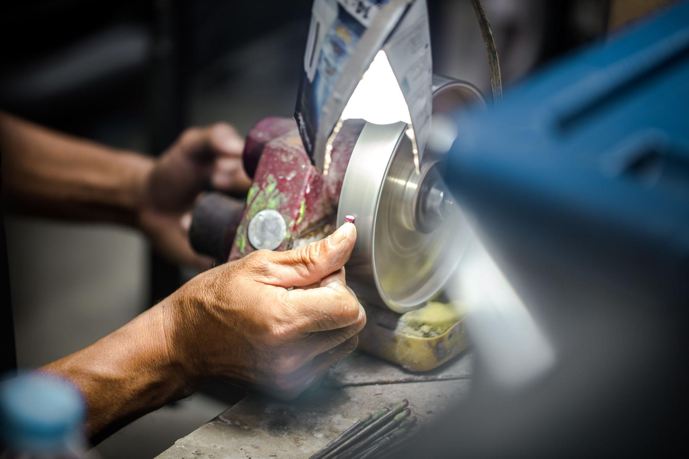
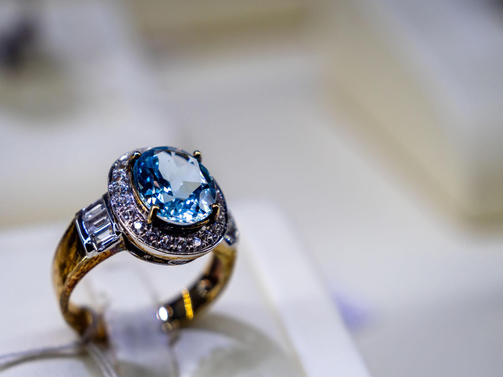
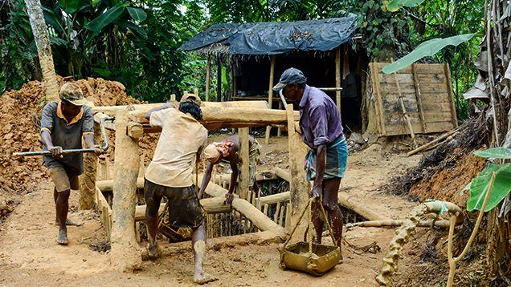

scroll
あなたの人生に
忘れられない輝きを。

占星術鑑定 → スリランカでの宝石原石採掘 → 世界に一つだけのジュエリー製作を、一気通貫で提供します。
「宝石を買う」のではなく「自分に必要な一石を取りに行く」体験です。
「五つの石」とは、スリランカ占星術で導き出した、あなたに必要な宝石の種類を指します。
seven steps

生年月日・出生時刻・出生地から星の配置を読み解きます。30,000円（税込）。鑑定のみで完結しても構いません。

いま、あなたに必要な宝石が5種類提示されます。それぞれの石に宿る意味とともにお伝えします。

3つのプランから選択。リング／ペンダント／ピアスに対応しています。複数のデザインから選ぶ方式です。
※オプションにてフルオーダーでのご案内も可能


採掘で出てきた石の中から、メインストーンをお選びいただきます。

原石を研磨・加工し、鑑別書とともにお渡しします。あの日掘り出した石が、生涯の一石になります。
price
占星術鑑定 30,000円（税込）
採掘・ジュエリープランの料金は、お問い合わせいただいた方に個別にご案内します
まずは五つの石を知ることから。プランのお申し込みは、鑑定のあとで結構です。
on-site only
過去の採掘で出た掘り出し物を詰めた、現地限定のサプライズ。現地参加者だけの特別なご案内です。後日、日本国内でお渡しします。

完成したジュエリーは、鑑別書とともに日本国内でお受け取りいただきます。あなたが土の中から掘り出した一石が、生涯の一石になります。

astrology
スリランカ屈指の占星術師が、生年月日・出生時刻・出生地から鑑定します。歴代の大統領・政治家・著名人を鑑定してきた実績を持ちますが、実名・写真は使用しません。
local base
スリランカ・ノジリ鉱山という実際の産地と提携。現地パートナーとの協業体制のもと、価格・デザイン・石の選定を運営しています。
quality
0.5カラット以上の石のみを対象とし、鑑別書を添付します。契約金額分の石は、採掘結果に関わらず必ずご用意します。
honesty
「石は出ないことがある」ことを、先に明示します。資産運用・投資目的ではないことも明言し、過大な期待を作らない設計にしています。
two islands
インド洋に浮かぶ島、スリランカ。太平洋に浮かぶ島、日本。海を6,500km隔てた二つの島国には、思いがけないほど深いつながりがあります。
日本には、八百万の神という言葉があります。自然そのものに、目に見えないものの存在を感じてきた国です。スリランカは、世界有数の宝石産出国。その多くは、土の中に眠る一つの原石から始まります。

山、森、岩、滝、海。日本人は古来、自然そのものに神を見出してきました。屋久島の森はその象徴です。

サファイア、ルビー、キャッツアイ、ムーンストーン。世界有数の宝石産出国で、私たちは宝石が並ぶ店ではなく、宝石が生まれる大地へ向かいます。
our origin
スリランカで長く宝石を扱ってきた友人が、なんでもないことのように、そう言いました。調べていくうちに、私たちは気づきます。富を司る神。勝利を授ける神。転機を導く神。それらはすべて、日本の神々と対応していたのです。
私たちが売っているのは、宝石ではありません。今のあなたに必要な神様と出会う、その旅です。
— SERENDIB 創業者
1951年9月6日、サンフランシスコ講和会議。セイロン代表J・R・ジャヤワルダナは法句経の一節を引き、日本への賠償請求を放棄すると告げました。
憎悪は憎悪によって止むことなく、
ただ愛によってのみ止む。
被害を受けた側の国が、敗戦国を擁護した。日本は分割されず、翌年には独立を回復し、国際社会へ戻っていきます。外務省は、この演説を「国際社会復帰への道につながる象徴的な出来事」と記しています。
6,500km離れた島国が、かつて日本に差し出した手。私たちがスリランカへ向かう理由は、宝石が採れるからだけではありません。
pantheon — 8柱
占星術師の監修のもと、その対応を紐解きました。
世界を維持する神。日本では、すべてを照らす太陽の神として。
障害を取り除く象頭の神。日本では、福をもたらす笑顔の神として。
蓮の上に立つ女神。日本では水辺に祀られる。
戦いを司る神。日本では、雷とともに現れる武の神として。
破壊と再生の神。日本では、国を造り、譲った神として。
聖なる山を守る神。日本では、鉱と山を司る神として。
貞節を象徴する女神。日本では、花のように咲く姫神として。
境界を守る神。日本では、道の先に立ち導く神として。
あなたの石が決まったとき、日本で参るべき場所も、同時に決まります。
※神々の対応関係および石にまつわる記載は、両国に伝わる伝承・文化に基づくご提案です。特定の効果・ご利益を保証するものではありません。
世界有数の宝石ベルトに位置するスリランカの大地から、あなた自身の手で掘り出した一石。それは、次の時代を生きる大切な人の未来へ、継承していただけます。
faq
はじめての方へ。よくあるご質問をまとめました。
はい、可能です。まずは鑑定のみお申し込みいただき、結果を踏まえて採掘・ジュエリープランへ進むかをご検討いただけます。鑑定は30,000円（税込）です。
現地に渡航する「ROUTE A」と、渡航不要でオンライン完結する「ROUTE B（バーチャル採掘）」の2つの道をご用意しています。
現地スタッフとの同行は3名までは無料です。4名以上の場合は追加費用で承ります。
納得のいく石に出会うまで、3回まで掘れます。それでも出会えなかった場合は、同じ鉱山で過去に採掘された石の中からお選びいただけます。ご契約金額分の石は必ずご用意いたします。
掘り出した一石を、複数のデザインからお選びいただく方式です（完全フルオーダーメイドではありません）。リングのほか、ペンダント・ピアスもお選びいただけます。
占星術鑑定は30,000円（税込）です。採掘・ジュエリープランの料金は、お問い合わせいただいた方に個別にご案内しております。
渡航費・宿泊費はお客様のご負担です。当社では旅行の手配・あっせんは行っておりません。海外旅行保険へのご加入を強くおすすめします。
本サービスは宝石を資産運用・投資目的で提供するものではなく、将来の価値を保証するものではありません。占星術鑑定や神々・宝石にまつわる記載も、伝承・文化に基づくご提案です。
はい。スリランカ・ノジリ鉱山で実際に採掘された天然の原石です。現地スタッフと共に、あなた自身の手で掘り出していただきます。
採掘で出てきた石の中から、メインストーンをご自身でお選びいただけます。鑑定で示された5種類の候補のうち、実際に採掘で出た石が対象です。
現地で採掘された原石は、日本国内でお渡しします。完成したジュエリーも日本国内でのお受け取りとなります。
お申し込みフォームに「わからない」チェックボックスをご用意しています。出生時刻が不明な場合も、そのままお申し込みいただけます。
begin
星がどの五つを示すのか。それを知るだけでも意味があります。
掘りに行くかどうかは、そのあとで決めてください。
占星術鑑定・神話にまつわる記載は伝承文化に基づく提案であり、効果・ご利益を保証するものではありません。